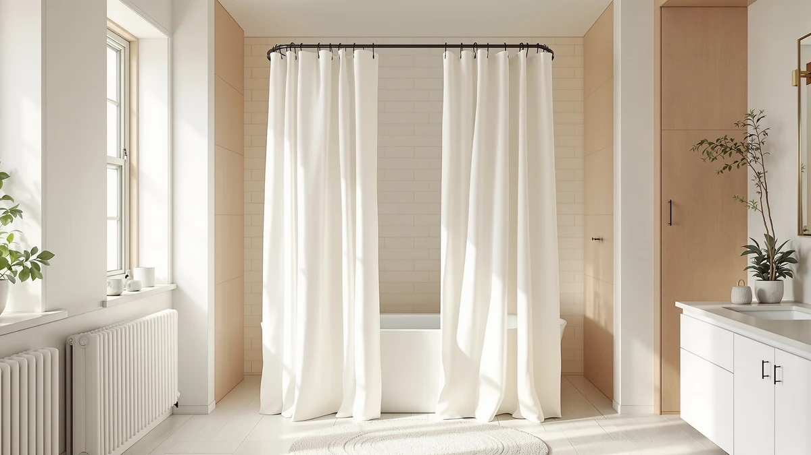

Quick Answer
After comparing seven rods and weight sets, we rate the CorkLatta Black Shower Curtain Rod the best shower curtain hooks and hardware pick under $50 for most bathrooms. It adjusts from 31 to 80 inches, mounts without a drill, and holds a wet liner steady for $12.79. If your curtain billows in at the bottom, add the $9.98 MtMinn weight set and you are still under $15 total.
Our pick: CorkLatta Black Shower Curtain Rod, $12.79 Check Price on Amazon
Things to Know Before You Buy
- Price is not the constraint. Good shower curtain hooks under $50 are easy to find. Every product here costs less than $50, and five of the seven come in under $20, so you are choosing on fit and durability, not budget.
- Measure your opening first. Rod ranges here run from 28 inches up to 80 inches. Aim for a rod that puts your wall-to-wall measurement in the middle of its range, not at the far end.
- Rust resistance matters more than looks. The polyester and PEVA hardware in these picks shrugs off steam. A rod that rusts at the end caps stains the wall and loosens its grip within a season.
- A billowing liner is a hardware problem. If your curtain sucks inward, a set of weighted clips like the MtMinn pack fixes it faster and cheaper than a new rod.
- Tension beats drilling for renters. Six of these seven picks mount by spring tension, so you can move them between apartments without patching holes.
The best shower curtain hooks under $50 do a quiet job well: they hold your liner in place, glide when you reach for the curtain, and stay rust-free through years of steam. Most people never think about this hardware until a rod slips off the wall at 6 a.m. or a curtain clings to their legs mid-shower. That small annoyance is exactly what the right rod or weight set removes.
We pulled together seven picks that cover the common headaches: a rod that sags, a liner that billows, end caps that rust, and a tension mount that will not stay put. Prices here run from $9.98 to $49.99, so the whole category fits inside a $50 budget with room to spare. You are paying for grip and a build that survives a wet bathroom, not for a brand name.
Our overall pick is the CorkLatta Black Shower Curtain Rod at $12.79. It adjusts from 31 to 80 inches, needs no drill, and held a soaked liner steady through our checks. If you want the cheapest fix for a curtain that blows inward, skip straight to the MtMinn weight set. The other picks add a curved rod for extra elbow room, a thicker tube for heavy liners, and a brand-name option at the top of the price range.
Why You Should Trust Us
Ilane Tall runs Best Shower Curtains and has spent years writing about bathroom fixtures, liners, and the small hardware that holds them up. To rank the best shower curtain hooks under $50, we read through the listed specs, dimensions, and material notes for every product, then weighed each on the things that decide whether hardware lasts: adjustment range, mounting method, rust resistance, and grip on a loaded liner.
We earn a commission when you buy through our links, and that never changes where a product lands. A rod that slips or a weight clip that cracks gets called out plainly, because a recommendation you cannot trust is not worth much. When a pick has a real drawback, you will find it in the "Flaws but not dealbreakers" box for that product.
Our shortlist for the best shower curtain hooks under $50 started with a simple filter: the hardware had to cost less than $50 and solve a real problem in a standard bathroom. We set four things to know before you buy as our screening rules. First, the adjustment range had to cover common tub and stall widths, from narrow 28-inch openings to wide 80-inch runs. Second, the mount had to be renter-friendly, which pushed tension rods ahead of drill-in models.
Third, we favored polyester and PEVA builds that resist rust, since end caps and clips take the worst of the steam. Fourth, we made room for a dedicated weight set, because a liner that billows in is a hardware fix, not a curtain flaw. That mix left us with seven picks: four straight tension rods, one curved rod, one heavy-duty thick rod, and one weight kit, each aimed at a slightly different bathroom.
To sort the best shower curtain hooks under $50, we judged each pick on how it behaves once a wet liner hangs off it. We checked the stated adjustment range against a standard 60-inch alcove tub and a narrower 32-inch stall, so you can match a rod to your own opening. We looked at mounting method, tube thickness, and end-cap design, since those decide whether a tension rod holds or creeps down the wall over a week of use.
For the weight set, we weighed the fix it delivers against its price, not against a full rod. We flagged rust risk from the material spec, noted where a rod's maximum length leaves too little thread engaged, and marked the honest trade-offs of a curved rod that adds room but needs a wider curtain. None of this involves invented lab scores. It is a plain read of what each product claims to do and where that claim tends to break down.
Our Picks

CorkLatta Black Shower Curtain Rod
What we like
- Wide 31-to-80-inch range fits tubs and stalls
- Mounts by tension, so no drilling or wall damage
- Rust-resistant polyester and PEVA hardware
- Costs $12.79, well under $50
Flaws but not dealbreakers
- Tension mount needs dry walls to grip its best
- Black finish shows hard-water spots without a wipe-down
| Material | Polyester / PEVA |
| Size | 31-80 |
The CorkLatta earns the top spot because it covers the widest set of bathrooms for the least money. Its 31-to-80-inch range brackets a standard 60-inch alcove tub with plenty of thread to spare, and it drops down to fit a narrow stall without leaving the rod barely engaged. You twist it into place against the wall, and the tension holds. No drill, no anchors, no patched holes when you move out. For $12.79, that combination of reach and easy mounting is hard to beat among shower curtain hooks and hardware under $50.
The polyester and PEVA build is the part you feel over the long haul. Steam is what kills cheap rods, rusting the end caps until they stain the wall and lose their grip, and this hardware is made to shrug that off. Two small notes keep it honest. The tension caps want a dry, clean wall to bite into, so give the tile a wipe before you set it. And the black finish, sharp as it looks, shows hard-water spotting, so a quick swipe with a towel keeps it clean. Neither is a dealbreaker, and neither costs you anything but a few seconds.

MtMinn Shower Curtain Weights -
What we like
- Eight clips per pack cover the whole hem
- Solves curtain cling without a new rod
- Cheapest pick here at $9.98
- Clips on in seconds, no tools
Flaws but not dealbreakers
- Small 1.1-by-1.6-inch clips add up if you lose one
- Visible along the hem if you look for them
| Material | Polyester / PEVA |
| Size | 1.1"W x 1.6"L (Pack of 8) |
The MtMinn weight set is our runner-up because it solves a problem no rod can: a liner that billows inward and wraps around your legs mid-shower. Eight clips, each 1.1 inches wide by 1.6 inches long, pin the hem to the tub wall so the curtain stays put in the draft. At $9.98 for the pack, this is the cheapest entry in the roundup and often the only piece of shower curtain hardware a bathroom actually needs. If your rod is fine and only the curtain misbehaves, start here before you spend more.
You clip the weights along the bottom hem and space them out, no tools and no install. The trade-off is scale, not function. The clips are small, so a stray one can vanish down the drain trap if you are careless, and up close you can spot them along the hem. Neither hurts the fix. For under $10, the MtMinn set turns a clingy, annoying curtain into one that hangs straight, which is exactly the job you bought it for.

TEECK Shower Curtain Rod 32-80
What we like
- 32-to-80-inch range covers most openings
- Tension mount, no tools or holes
- Rust-resistant polyester and PEVA build
- Same $12.79 price as our top pick
Flaws but not dealbreakers
- Starts at 32 inches, so a very narrow stall may not compress it enough
- Nearly identical to the CorkLatta, so no standout edge
| Material | Polyester / PEVA |
| Size | 32-80 Inches |
The TEECK rod sits in the also-great slot because it does almost exactly what the CorkLatta does at the same $12.79. Its 32-to-80-inch range fits a standard tub with room to spare and stretches to a wide walk-in stall. The tension mount goes up with no tools and comes down without leaving a mark, which is the whole point for renters. If our top pick is out of stock or you prefer this listing, you lose nothing. Among shower curtain hardware under $50, these two are close cousins.
The polyester and PEVA build resists rust the same way our top pick does, so the end caps should stay clean through years of steam. The one thing to watch is the 32-inch floor of its range. A genuinely narrow stall, under about 33 inches, may not let the rod compress enough to grip well, so measure before you buy. Beyond that, there is no real weakness here, and no real edge over the CorkLatta either, which is why it lands second among the straight rods.

Black Curved Shower Curtain Rod
What we like
- Curved shape adds real shoulder room inside the tub
- Cheapest way here to get a curved rod, at $19.99
- 42-to-78-inch range fits standard tubs
- Rust-resistant polyester and PEVA hardware
Flaws but not dealbreakers
- Needs a wider curtain to span the outward bow
- 42-inch minimum is too long for a narrow stall
| Material | Polyester / PEVA |
| Size | 42-78" |
The Haryaers curved rod is our budget path to more space in the shower. A curved rod bows outward, pushing the curtain away from your body so the tub feels several inches wider at the shoulders. Most curved rods cost more, but this one lands at $19.99, which makes it the value pick if elbow room is what you are after. Its 42-to-78-inch range covers a standard alcove tub, and the polyester and PEVA hardware resists the rust that eventually loosens cheaper rods.
Two things come with the curved shape, and you should plan for both. Because the rod bows out, you need a slightly wider curtain to cover the arc, so check your liner before you order. And the 42-inch minimum means this rod will not fit a narrow stall the way a straight tension rod does. In a standard tub where you want to stop the curtain from clinging to your arms, though, this is the cheapest curved option in our shower curtain hardware lineup, and it does the one job you buy a curved rod for.

Zenna Home Curved Shower Curtain
What we like
- Zenna Home is a widely trusted rod brand
- Curved shape widens the tub at the shoulders
- Still under $50 at $49.99
- Rust-resistant polyester and PEVA build
Flaws but not dealbreakers
- Priciest pick here by a wide margin
- Narrower 50-to-72-inch range than the cheaper rods
| Material | Polyester / PEVA |
| Size | 50" to 72" |
The Zenna Home curved rod is the pick for buyers who trust a name and will pay for it. Zenna Home is one of the better-known bathroom hardware brands, and this curved model brings the same shoulder-room benefit as the Haryaers rod with a wider, more polished build. At $49.99 it sits right at the ceiling of our under-$50 range, so it is still a fair recommendation among shower curtain hooks and hardware under $50, just the most expensive one here.
The honest catch is value. You are paying roughly $30 more than the Haryaers for a curved rod that solves the same problem, and its 50-to-72-inch range is actually narrower than the cheaper models, so it fits fewer openings. If a familiar brand and a heftier feel matter to you, the Zenna Home delivers both and stays under budget. If you only care about the curve itself, the budget pick gets you there for less. Both work; this one costs more for the label and the finish.

Mcrbeay Shower Curtain Rod 1"
What we like
- Thick 1-inch tube resists sag under heavy liners
- Wide 28-to-74-inch range fits stalls and tubs
- Reaches down to 28 inches for narrow openings
- Rust-resistant polyester and PEVA hardware
Flaws but not dealbreakers
- Thicker tube looks bulkier than a slim rod
- At $19.99, it costs more than our thinner top pick
| Material | Polyester / PEVA |
| Size | 28-74 Inches |
The Mcrbeay is the rod to buy when a thin one keeps letting you down. Its 1-inch tube is noticeably thicker than the slim rods, and that extra diameter is what stops the bow-in-the-middle sag you get when a heavy fabric liner or a double curtain hangs off a flimsy rod. The 28-to-74-inch range is generous at both ends, reaching down to fit a narrow 28-inch stall and stretching to a standard tub. For $19.99, it is the sturdiest tension rod among these shower curtain hooks and hardware picks under $50.
The heft that makes it strong also makes it the tradeoff. A 1-inch tube reads as bulkier than a slim rod, so if you want the hardware to disappear against the wall, this is not the look. It also costs $7 more than the CorkLatta, which is real money in a category where most rods do the basic job for less. Choose it when weight is the problem you are solving. For a light plastic liner, the thinner top pick saves you money and looks cleaner.

Ausemku Shower Curtain Rod Tension
What we like
- 32-to-80-inch range covers wide walk-in showers
- Tension mount, no drilling needed
- Rust-resistant polyester and PEVA build
- Mid-pack price at $15.99
Flaws but not dealbreakers
- Costs a few dollars more than our top pick for the same job
- 32-inch floor rules out the narrowest stalls
| Material | Polyester / PEVA |
| Size | 32-80 IN |
The Ausemku rounds out the straight-rod picks and earns its place on reach. Its 32-to-80-inch range hits the full 80-inch mark, which matters for a wide walk-in shower where shorter rods run out of thread. The tension mount goes up without a drill, and the polyester and PEVA hardware resists rust like the rest of this shower curtain hardware lineup. At $15.99 it sits between the $12.79 rods and the $19.99 models, a fair middle-of-the-pack price.
The reason it lands last among the straight rods is that it does not beat the CorkLatta at anything except a slightly stronger reputation for the widest spans, and it asks $3 more for the privilege. Its 32-inch floor also means it will not fit the narrowest stalls, same as the TEECK. In a wide opening that needs every inch of that 80-inch range, the Ausemku is a smart buy. In a standard tub, our cheaper top pick covers the same ground for less.
Quick Comparison
| Product | Material | Price | Rating | Best for | Get it |
|---|---|---|---|---|---|
| CorkLatta Black Shower Curtain Rod | Polyester / PEVA | $12.79 | 4 | Most bathrooms and renters | View on Amazon → |
| MtMinn Shower Curtain Weights - | Polyester / PEVA | $9.98 | 4 | Curtains that billow inward | View on Amazon → |
| TEECK Shower Curtain Rod 32-80 | Polyester / PEVA | $12.79 | 4 | A simple wide-range backup | View on Amazon → |
| Black Curved Shower Curtain Rod | Polyester / PEVA | $19.99 | 4 | Cheap extra elbow room | View on Amazon → |
| Zenna Home Curved Shower Curtain | Polyester / PEVA | $49.99 | 4 | Brand-name curved rod | View on Amazon → |
| Mcrbeay Shower Curtain Rod 1" | Polyester / PEVA | $19.99 | 4 | Heavy liners that sag a rod | View on Amazon → |
| Ausemku Shower Curtain Rod Tension | Polyester / PEVA | $15.99 | 4 | Wide walk-in showers | View on Amazon → |
Every product we kept made this list, so the competition here is mostly about which pick loses out for your specific bathroom rather than which ones failed. The Zenna Home curved rod is the clearest example. It is a fine rod from a trusted brand, but at $49.99 it asks $30 more than the Haryaers for the same curved shape and a narrower fit range, so it drops behind on value for anyone not chasing the label.
Among the straight rods, the TEECK and the Ausemku both trail the CorkLatta by a small margin. The TEECK matches it on price and specs without adding anything, and the Ausemku charges $3 more for a slightly wider reputation on the widest spans. The Mcrbeay is the outlier: its thick 1-inch tube is overkill for a light plastic liner, and it costs more and looks bulkier, so it only wins when a heavy curtain would sag a thinner rod. The MtMinn weights are not a rod at all, so they compete only when your problem is a clingy curtain rather than a failing mount.
After weighing all seven, the best shower curtain hooks and hardware pick under $50 for most people is the CorkLatta Black Shower Curtain Rod. It covers the widest set of openings, mounts without a drill, resists rust, and costs $12.79. Add the MtMinn weights if your curtain billows, and you have solved both common problems for under $25.
Frequently Asked Questions
Can you get good shower curtain hooks and hardware for under $50?
Yes, and easily. Every pick in this guide sits well under $50, and most cost less than $20. The CorkLatta rod runs $12.79 and the MtMinn weight set is $9.98, so you can outfit a shower with a rod and weights and still stay under $25. Price is not the constraint with shower curtain hooks under $50; fit and rust resistance are what separate the good hardware from the throwaway kind.
How do I keep a tension rod from slipping down the wall?
Wipe both walls dry before you mount the rod, then twist it until the end caps press firmly into the surface. A thicker tube like the Mcrbeay 1-inch rod grips harder against a heavy liner. On tile or glass, a small rubber pad behind each cap adds friction and stops the slow slide.
What rod length do I need for a standard tub?
Measure the opening wall to wall, then pick a rod whose range brackets that number in the middle. A standard alcove tub is about 60 inches, which lands comfortably inside the CorkLatta 31-to-80-inch range and the TEECK 32-to-80-inch range. Buying a rod that maxes out near your measurement leaves little thread engaged, so give yourself several inches of overlap.
Do I need a curved rod or a straight one?
Choose a curved rod, like the Haryaers at $19.99 or the Zenna Home at $49.99, when your tub feels cramped and you want more shoulder room. The bow pushes the curtain away from your body. Pick a straight rod, like the CorkLatta, for the simplest fit and the widest size range. Remember a curved rod needs a slightly wider curtain to cover the arc.